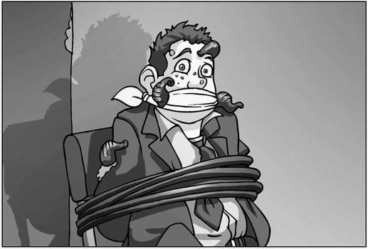
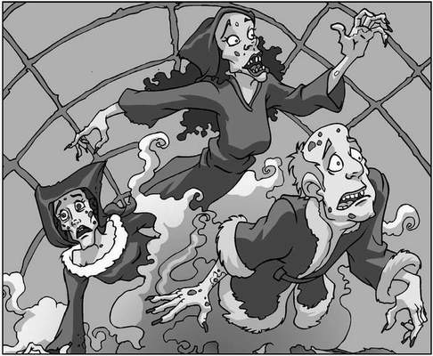

Gordon ‘The Gorilla’ Carver struggled to free himself from the ropes that tied him firmly to the old, broken school chair. His legs splashed about wildly in filthy, brown water that swirled up to his knees, containing lumps of something he didn’t dare think about. It couldn’t really be that, could it?
He was in some kind of underground cave, lit by an eerie glow that seemed to flicker constantly. And he had the strangest sensation that he was being watched, that thousands of pairs of eyes were on him at that very moment, as though he was the exhibit at some ghastly freak show.
And here’s that vile woman again, he thought. Why can’t she just leave me alone? I’ll be good. Promise. Just let me go back home. Please!
Edith danced merrily through the puddles of raw sewage towards Gordon, cackling crazily. ‘How’s my little pet?’ she sang, circling the bully and running her bony fingers through his hair. ‘Ready for his makeover?’
Behind her, Ambrose and William watched with expressions of concern. They knew that Gordon had been nasty to a lot of people, but he didn’t deserve anything like this.
Ambrose opened his mouth to object to the scene in front of him, but suddenly found his mouth filled with Edith’s hand as she reached down his throat to grab a recently swallowed leech. He gagged.
‘Come to Mama, my pretty,’ she oozed as she held the wriggling leech up to the dim light before laying it carefully on to Gordon’s face. ‘Stick on, little creature. Suck the face of your host!’
Gordon screamed in horror as the leech slithered over his skin.
Edith laughed and clapped her hands. Her plan was coming together perfectly. If the pupils of St Sebastian’s were scared of The Gorilla in his

everyday, human form, just imagine how they’d react when they saw what he would look like after her handiwork.
She raised her hands to the amphitheatre and shouted, ‘Reveal yourselves, my friends. Introduce yourselves to our guest!’ Gordon watched in terror as hundreds of men, women and children melted into view from the shadows, each one covered in buboes from the Black Death, warts and sores.
They paraded past him, smiling and bowing politely. Every now and again, Edith would pluck a scab from one of the faces, or rip a bubo from an armpit and attach it to Gordon’s own body. Before long, the bully looked as though he had perished from the plague himself. He struggled violently against the ropes that were cutting painfully into his arms.
‘Calm yourself, my lovely!’ cooed Edith, leaning down to plant a wet kiss on Gordon’s cheek. ‘We have all weekend to get to know each other and, when Monday comes around, the children above us will run screaming from the monster that is—you!’
She raised her hands above her head in a victory salute that brought a thunder of applause from the assembled ghosts and ghouls.
Gordon was sobbing now, his salty tears burning the wounds that covered his face. This had to be a nightmare. He would wake up at any moment. Please let him wake up! This couldn’t be real.
And then he saw the rat.
The ghosts didn’t notice Whiskers at first. They were too busy dancing with joy at the thought of St Sebastian’s School being be no more to spot one little rodent. Even Edith didn’t think to look down, until she heard the noise from the lid of her upturned barrel.
‘SQUEAK!’
Silence invaded the cavern. One by one, the ghosts focused on the rat. The rat that looked like no other they had seen for over six hundred years. The rat that was clearly carrying the Black Death.
‘Oh, no,’ muttered William a split second before utter chaos broke out.
Screaming and shouting, the ghosts clambered over each other, fighting to get away from the disease which had brought them a disgusting, pain-wracked death centuries before. They bit, kicked and scratched anyone who got in their way, desperate to be free of the plague.
‘No, wait!’ shouted William in vain. ‘It’s just a pet rat they put make-up on! And it can’t hurt us anyway—we’re already dead, remember?’ But his voice was lost in the screams that echoed around the cavern.
Even Edith had lost control. ‘I won’t go through that again!’ she screamed, pushing Gordon’s chair over in an effort to escape. ‘Get it away from me!’
His face hit the top of the barrel as the chair toppled forwards, his eyes just centimetres from the bewildered rat.
‘SQUEAK!’
Gordon fainted, sinking happily into blackness as Whiskers licked at the bully’s nose.

‘We have to stop them!’ shouted William to Ambrose, who was frozen to the spot with fear. ‘It’s just a trick!’ Ambrose said nothing, his gaze fixed on the rat. William reached up and slapped him hard across the face. ‘Ambrose!’ he screamed. ‘Help me!’
Ambrose Harbottle nodded, and the two ghosts dashed into the centre of the spectral riot. Things had really got out of hand now as the exit tunnels had become blocked with the terrified dead.
Lady Grimes had paled even further than usual, having lost her usual air of refinement, clawing madly at any ghost that dared to get in her way.
Bertram Ruttle had grabbed the nearest skeleton he could find, and was swinging it around to try and clear a path to freedom. Each time the skull connected with a ghostly head, he clambered over the fallen spook and took aim at the next terrified phantom.
The Headless Horseman had pulled his head from beneath his arm, and was holding it out so that it could bite at other ghosts’ bottoms, making them think the rat had caught up with them.
William found Edith in a corner of the amphitheatre, crouched behind an old, crumbling gravestone, rocking back and forth. ‘Edith, listen to me!’ he commanded. ‘This isn’t real! None of it is real! You have to speak to them. They’ll listen to you!’
Edith, however, was far from with it, having withdrawn inside her mind to her ‘happy place’: the ramshackle hut where she had lived all those years ago, merrily picking on her useless lump of a husband. You waste of skin! she shouted at him, deep in her unconscious. Don’t come back until you’ve caught something for dinner!
‘SQUEAK!’
William spun round. ‘We have to get that rat out of here!’ he shouted to Ambrose, who was busy trying to fight his way out from underneath Lady Grimes, who had fainted on top of him the moment the Headless Horseman’s teeth had sunk into her behind.
William leapt over Edith and raced for Whiskers, who was still sitting calmly on top of the barrel, unaware of the chaos he had caused. The boy ducked as Bertram Ruttle swung a length of spine violently past his head, all that was left of his skeletal weapon. ‘Almost there,’ said William to himself. ‘Just a few more metres.’
He reached the barrel and pulled Gordon’s chair upright. The bully slumped back in the seat, still deep in a faint. As William stretched out his hand to pick up the rat, a skull flew out of the pack of fighting ghosts and collided with the boy’s head.
The last thing William heard as he sank to his knees was a tiny voice off to his left: ‘Hey, that’s me!’